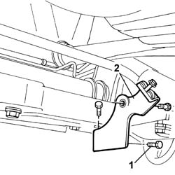
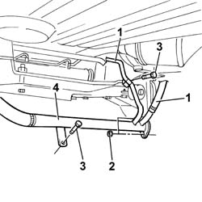
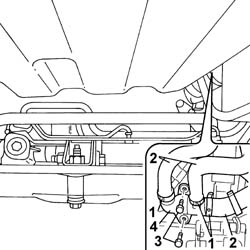

1088D26 RIGID INTAKE PIPE TO WATER PUMP - R+R FOR VERSIONS WITH A/C
- Path
- Procedures > 10 ENGINE UNIT > 1088 ENGINE COOLING > 1088D COOLANT HOSES AND SLEEVES > 1088D26 RIGID INTAKE PIPE TO WATER PUMP - R+R FOR VERSIONS WITH A/C
- Kind
- repair procedure (removal / refitting; the operation number is the code)
- Applies to
- engines: 2.0 16V, 2.8 JTD 8V; all production periods
- Interactive page
- https://sloeber94.github.io/elrnDB-fDct/en/#/244000960
Applies to: engines: 2.8 JTD 8V; all production periods
 Removing
Removing
 Refitting
RefittingOp. 7055B54 UNDER-ENGINE GUARD - R R
See in Op. 1048A10
See in Op. 1048A21
See in Op. 1084B40
Op. 1092D10 AIR CONDITIONER COMPRESSOR DRIVE BELT - R + R
Op. 1092B51 ALTERNATO/WATER PUMP DRIVE BELT - R+R FOR VERSIONS WITH AIR CONDITIONER
Op. 5530A14 ALTERNATOR - R+R FOR VERSIONS WITH AIR CONDITIONER
Op. 1064A50 SLEEVE JOINING TURBO CHARGER AND EXHAUST PIPE - R + R AND REPLACE SEAL
- Position a suitable container for collecting the engine coolant.
- Disconnect the lower radiator hose and drain the engine coolant into the container.
- Reconnect the lower hose.
1. Undo the fixing bolts.
2. Remove the turbo hose mounting bracket.

Applies to: engines: 2.8 JTD 8V; all production periods
1. Disconnect the hoses from the rigid pipe opening any securing bands.
2. Undo the nuts fixing the rigid pipe to the water pump.
3. Undo the bolts securing the rigid pipe to the engine.
4. Release the rigid pipe and remove it.

Applies to: engines: 2.8 JTD 8V; all production periods
Refitting
Removing- Fit a new gasket in place.
- Place the water pump rigid inlet pipe in position.
- Tighten the nuts fixing the rigid pipe to the water pump checking the torque.
 | Value - daNm | Fastening | Component | Ø |
|---|---|---|---|---|
. | 2,5 | Nut | COOLANT PUMP RIGID INLET PIPE | M8 X 1,25 |
- Tighten the bolts securing the rigid pipe to the crankcase.
- Fit the hoses and the pipes on the rigid pipe renewing any retaining bands.
- Position the turbo hose mounting bracket.
Op. 1064A50 SLEEVE JOINING TURBO CHARGER AND EXHAUST PIPE - R + R AND REPLACE SEAL
Op. 5530A14 ALTERNATOR - R+R FOR VERSIONS WITH AIR CONDITIONER
Op. 1092B51 ALTERNATO/WATER PUMP DRIVE BELT - R+R FOR VERSIONS WITH AIR CONDITIONER
Op. 1092D10 AIR CONDITIONER COMPRESSOR DRIVE BELT - R + R
See in Op. 1084B40
See in Op. 1048A21
See in Op. 1048A10
Applies to: engines: 2.0 16V; all production periods
Removing
RefittingOp. 4450B04 RIGHT FRONT WHEEL R R
Op. 7055B54 UNDER-ENGINE GUARD - R R
- Position a suitable container for collecting the coolant.
1. Open the retaining bands.
2. Release the coolant pipes.
3. Undo the fixing bolts.
4. Release the rigid coolant pipe and remove it.
- Collect the coolant.

Applies to: engines: 2.0 16V; all production periods
Refitting
Removing- Place the rigid pipe in position and tighten the fixing bolts.
- Fit the hoses on the rigid pipe and restore the fastening bands.
Op. 7055B54 UNDER-ENGINE GUARD - R R
Topics linked from this page (8)
- 0010T20 COOLANT CHECK DENSITY AND TOP UP IF NECESSARY
- 0010T21 COOLANT CHECK DENSITY AND TOP UP IF NECESSARY
- 1064A50 SLEEVE JOINING TURBO CHARGER AND EXHAUST PIPE - R + R AND REPLACE SEAL
- 1092B51 ALTERNATO/WATER PUMP DRIVE BELT - R+R FOR VERSIONS WITH AIR CONDITIONER
- 1092D10 AIR CONDITIONER COMPRESSOR DRIVE BELT - R + R
- 4450B04 RIGHT FRONT WHEEL R R
- 5530A14 ALTERNATOR - R+R FOR VERSIONS WITH AIR CONDITIONER
- 7055B54 UNDER-ENGINE GUARD - R R